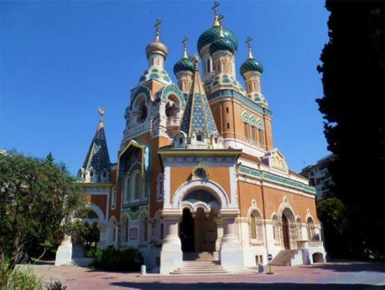

Christophe Levalois est enseignant, prêtre orthodoxe1, rédacteur en chef du site orthodoxie.com.
Ses derniers ouvrages portent sur le christianisme et la communication, ainsi que sur la place du sacré dans l’histoire des sociétés.
L’objet du livre est énoncé dès les premières lignes :
« Les pages qui suivent présentent une sélection d’écrits récents, courts et incisifs. Ceux-ci proposent à la fois une présentation du christianisme orthodoxe aujourd’hui, de son développement et de son rayonnement actuel dans ceux-ci [les différents pays], mais aussi des éléments fondamentaux de sa tradition qui le distinguent des autres confessions chrétiennes, ainsi qu’une réflexion sur les défis, notamment les questionnements nés de la confrontation avec la société occidentale, plus généralement avec l’esprit dominant du monde moderne, notamment son matérialisme et l’individualisme qu’il diffuse. »
Le programme se veut dense et ambitieux. Cependant, le livre reste accessible au plus grand nombre grâce au talent d’écriture de l’auteur.
Cet ouvrage s’articule autour de quatre grands thèmes : Le christianisme orthodoxe et l’Europe occidentale ; Éléments de la pratique et de la foi du christianisme orthodoxe ; Pour une communication qui mène à la communion ; Face aux défis du temps présent.
Levalois rappelle donc avec intérêt que « la présence du christianisme orthodoxe en Europe occidentale à l’époque contemporaine est un phénomène qui n’est plus nouveau. En effet, on peut considérer globalement qu’il a deux siècles d’ancienneté, un peu plus ou un peu moins selon les pays. »
Il stipule également que « la démarche fut souvent la même dans la plupart des pays. Ce sont tout d’abord des communautés d’étrangers qui furent à l’origine des paroisses orthodoxes. Avec le temps, les générations suivantes, d’autres arrivées, les mariages mixtes et les conversions, ces communautés se sont intégrées dans la société d’accueil. La plupart du temps, elles ont conservé un lien avec le pays d’origine, lien juridictionnel, mais aussi culturel et assez souvent linguistique. »
Pour Christophe Levalois, l’orthodoxie représente un rempart face à la modernité désastreuse de notre époque. Il remarque :
« En outre, en raison de l’importance primordiale de la tradition dans l’orthodoxie, qui est plurimillénaire, ces communautés observent naturellement une très grande réserve, et parfois expriment des critiques vigoureuses, vis-à-vis des évolutions du monde occidental, qui est également un modèle devenu, peu ou prou, planétaire aujourd’hui. » Effectivement, l’auteur précise que « la tradition orthodoxe manifeste le souci de l’intériorisation de l’humilité, qui est à l’opposé des aspects volontiers tapageurs et exhibitionnistes de la société actuelle. »
Cet ouvrage répond à un fait convenu et admis, en savoir qu’en Europe de l’Ouest et dans le monde occidental d’une manière générale, l’orthodoxie est méconnue.
L’auteur explique qu’il existe « une tension » spirituelle et culturelle, qui est « ancienne et profonde, mais surtout due à une incompréhension. » Il ajoute avec raison : « A part des spécialistes, des chercheurs remarquables et quelques personnes, l’Orient est peu connu en France, [et] c’est également vrai pour l’Europe orientale. » Pourquoi sommes-nous dans cette situation ? Levalois propose la réponse suivante : « Cela s’explique notamment par le fait que l’enseignement scolaire n’offre qu’une place limitée aux cultures orientales et à leur histoire. C’est également vrai de la Russie. »
Il estime que certains remontent à Charlemagne pour expliquer cette fracture, « même si Anne de Kiev fut reine de France au XIème siècle. » Nous lisons ce propos avec intérêt : « La recréation d’un empire en Occident (conçu comme étant la résurgence de l’Empire romain, l’Empereur portant le titre d’empereur des Romains) a suscité une opposition à l’Empire romain d’Orient (un intitulé que nous préférons à Empire Byzantin, une création occidentale du XVIème siècle). Déjà, peu d’années auparavant, au concile de Francfort, en 794, sous l’impulsion de Charlemagne qui n’était pas encore empereur, le deuxième concile de Nicée, en 787, fut condamné. L’opposition était là principalement théologique, mais la rivalité politique n’est pas à exclure. » Nonobstant le sac de Constantinople de 1204, le dialogue « bien que difficile, parfois suspendu, n’était pas encore rompu. Par contre la chute de Constantinople, en 1453, consacre définitivement une rupture entre l’Occident et l’Orient chrétien. »
Aujourd’hui les relations sont plutôt apaisées, malgré les vicissitudes et les aléas des politiques internationales. Cependant, Levalois écrit : « Les Russes connaissent mieux la culture française que les Français la culture russe ». Il ne faut pas oublier qu’après la révolution de 1917, nombreux sont les Russes Blancs qui émigrèrent en France. Ce phénomène consolida l’appropriation culturelle et sociale des Russes à l’endroit des mœurs françaises que la francophilie des siècles précédents avait suscitée en Russie (la noblesse parlant et écrivant le meilleur des français).
L’auteur regrette cette méconnaissance, car il estime que c’est regrettable de mettre ainsi « des distances avec des populations qui ont un préjugé très favorable vis-à-vis de nous, notamment en raison de notre héritage historique et culturel, mais aussi parce que nous sommes complémentaires, on le voit dans nos approches intellectuelles : la rigueur française d’un côté, l’ampleur et l’illimité russes de l’autre, qui produisent une fascination réciproque pouvant être fructueuse pour chacun. »
De fait, orthodoxes et catholiques se rejoignent dans leurs critiques au sujet des dérives de la science, de la société de consommation, et du divertissement, comme l’expriment les différents articles de Levalois. C’est pourquoi nous apprécions les différentes analyses au sujet des désastres provoqués par la modernité, notamment celles qui sont consacrées aux dérives de la communication. L’auteur rappelle le lien évident entre communication et christianisme.

La Cathédrale St-Nicolas de Nice
En effet, l’Église fut l’une des premières institutions à avoir eu recours à la communication comme facteur, entre autres, de cohésion sociale. Aujourd’hui, bien au contraire, les outils de communication, et particulièrement les réseaux sociaux, peuvent favoriser l’atomisation de la société et donc des individus – et les médias y contribuent largement, car ils le plus souvent loin de servir la vérité, dans quelque ordre que ce soit.
En fin de compte, ce livre commis par Levalois s’adresse à tous ceux qui désirent connaître les grandes lignes de l’histoire orthodoxe, ainsi que les prises de position des Églises orthodoxes sur les sujets d’actualité les plus récents. Le style concis, direct et professoral de Levalois permet de comprendre aisément les idées qu’il développe. Il pense, et nous approuvons son propos, que « le temps du ressourcement est de plus en plus limité par une agitation constante qui épuise physiquement et psychiquement. » Lire cet ouvrage vous permettra d’échapper à cette doxa officielle si abrutissante… et si peu ortho-doxa.
F.A.
(1) Orthodoxe, orthodoxus, issu du grec orthos, droit, et doxa, opinion. En matière de religion, l'adjectif « orthodoxe » qualifie ce qui est conforme à la doctrine, considérée comme une vérité. D’un point vue catholique, les orthodoxes sont ceux qui suivent le Pontife Romain.
Partager cette page